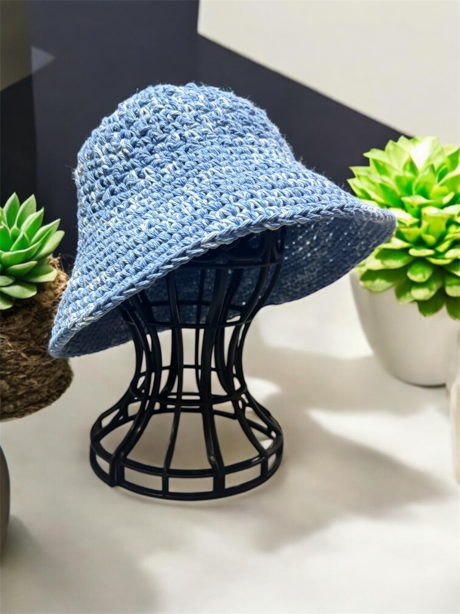
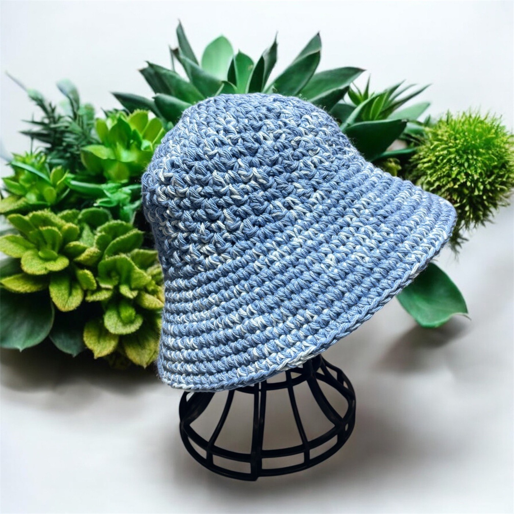

Accessories · Hats
Brook sun hat
AED 40
A wide-brim cotton sun hat for slow, bright days. suitable for 22" circumference fit.


Accessories · Hats
A wide-brim cotton sun hat for slow, bright days. suitable for 22" circumference fit.